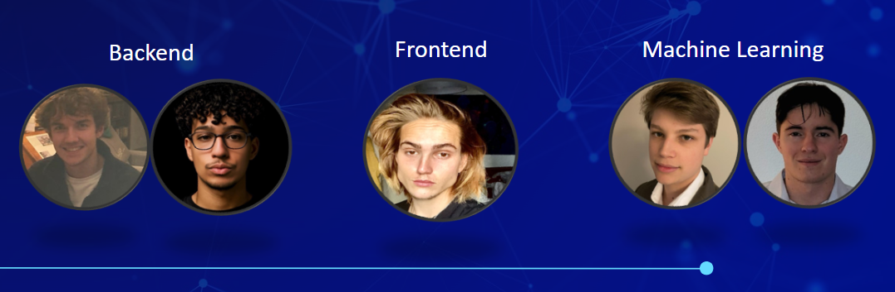
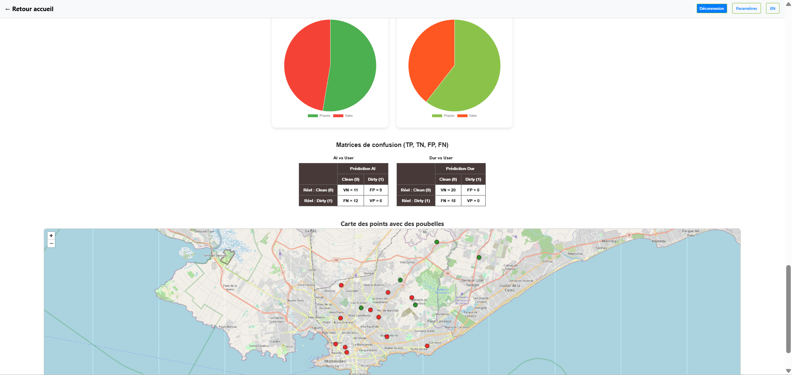
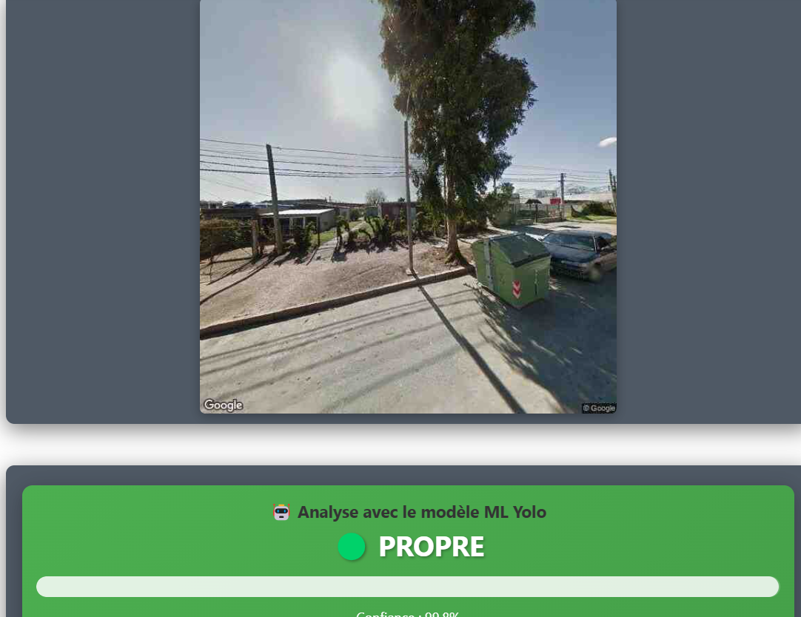
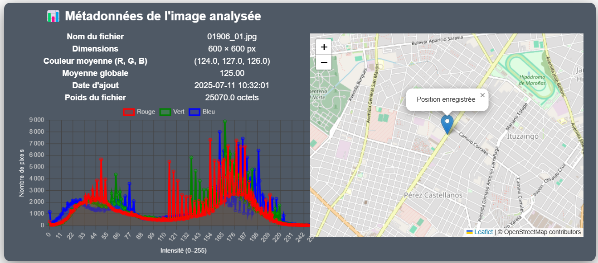

Le projet du MasterCamp de 2025 vise à développer une plateforme web intelligente capable de détecter automatiquement l’état des poubelles urbaines à partir d’images (pleines, débordantes, vides). Cette solution numérique innovante permet une meilleure anticipation des risques de débordement et contribue à limiter l’apparition de dépôts sauvages dans l’espace public. Elle s’inscrit dans une démarche AI for Good et promeut une gestion écoresponsable des déchets grâce à la collecte de données visuelles, leur annotation, et l’exploitation de caractéristiques simples extraites automatiquement (taille, couleur, contraste...).
Projet : MasterCamp 2025
Objectif du projet
L'équipe derrière le projet
Une équipe motivée, à l’intersection entre data science, développement web et engagement écologique, respectivement :
Alexandre, Adam, Xavier, Nicolas, et Paul.

🧠 Algorithmes & Architecture du Système
Comment le site fonctionne ?
Le site permet à l’utilisateur (qui a un compte propre) de télécharger l'image d’une poubelle urbaine, de renseigner sa position géographique et de valider l’état de propreté de la poubelle (cette étape permet de vérifier la précision de nos modèles d'IA).
L’analyse de l’état des poubelles repose sur 3 niveaux complémentaires combinant IA, vision
par ordinateur et feedback utilisateur :
🔬 1. Classification via ViT (Vision Transformer)
- Modèle principal basé sur la vision par transformer (ViT).
- Précision obtenue : 91% sur notre jeu de test.
- Voir le modèle sur Hugging Face
- 🔗 Notebook d'entraînement sur Google Colab
🧾 2. Détection par YOLOv8
- Utilisé pour localiser automatiquement la poubelle dans l’image.
- Analyse la saturation des pixels autour de la poubelle (déchets visibles).
- Complète et renforce la classification du modèle ViT.
🙋♂️ 3. Feedback utilisateur (comme vu plus haut)
- Un champ checkbox permet à l’utilisateur d’annoter manuellement l’image (propre / sale).
- Utile pour valider ou corriger la prédiction automatique et améliorer les performances globales.
🔗 Retrouvez les détails complets dans notre rapport technique :
📄 Télécharger le rapport technique FR(PDF)Démonstration Visuelle

📊 En haut : précision de notre modèle ViT (classification propre/sale), à gauche ce qui est renseigné par l'utilisateur, à droite, ce que le modèle trouve.
🗺️ En bas : des poubelles analysées (localisation Montevideo).

✅ Interface après analyse : image uploadée, label généré par l’IA et retour visuel.

🎯 Extraction des métadonnées visuelles (taille, couleurs, contours) autour de la poubelle via YOLO.
🎥 Une vidéo vaut mieux que mille mots...